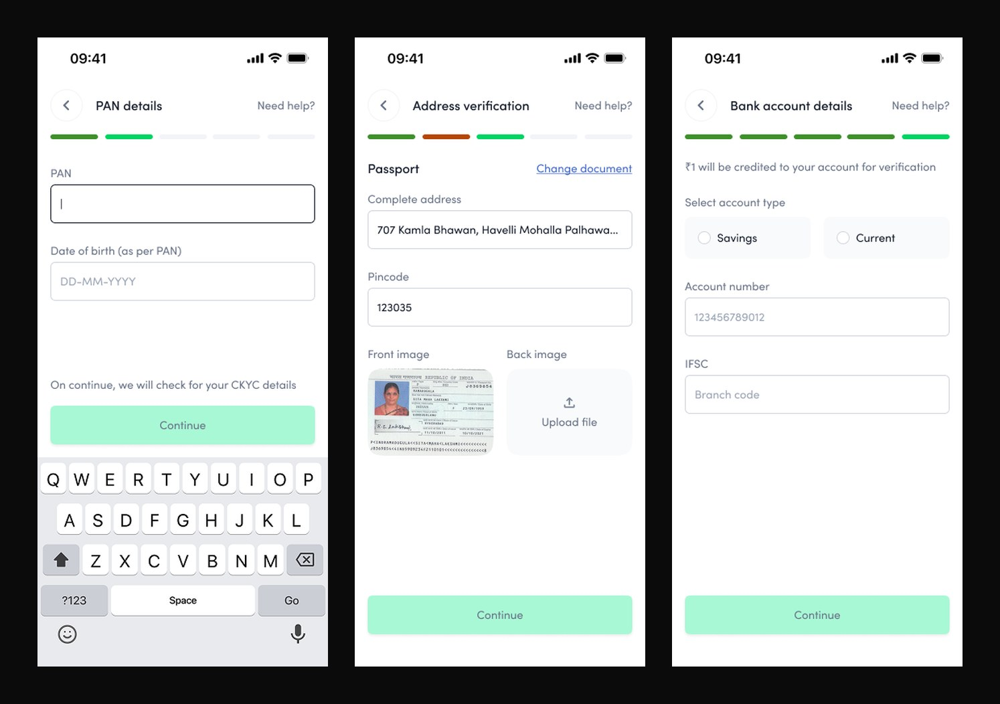
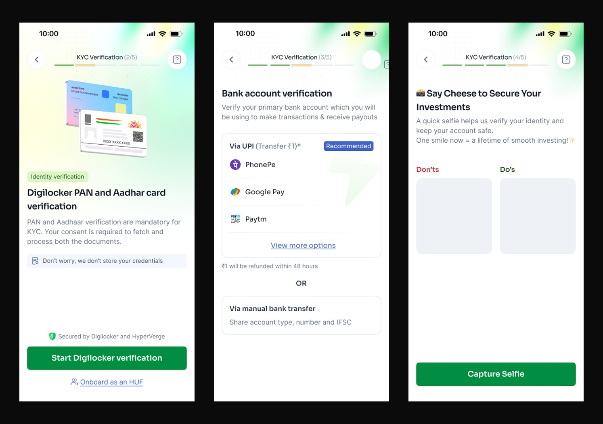

Case study · Aspero Wealth · Yubi · Onboarding and retention
The KYC that stoppedfeeling like paperwork.
Aspero could get people to open the app. It could not get them to finish signing up, or to come back. We rebuilt onboarding as a guided relationship instead of a form to survive, then made the money feel personal with goals and a forecast. Click-through rose 86% and 30-day retention rose from 34% to 58%.
Aspero was good at acquisition and weak at everything after it. People installed, tapped in, and stalled. The reason lived in onboarding: KYC was a 120-screen gauntlet that opened cold on a PAN and a date of birth, before the product had given anyone a reason to trust it with either. Progress was shown as a bar with no numbers, and in places a step turned red, which reads as failure, not motion.
The funnel told the story. Only 38% of the people who started KYC finished it, and 42% of the loss happened at the identity step, the exact moment the app asked for sensitive data with nothing offered in return. Click-through on the start-investing prompt sat at 21%, and 30-day retention at 34%. The problem was not the fields. It was the feeling.
120Screens in the old KYC flow
38%Finished the KYC they started
42%Dropped at the identity step
34%30-day retention
02 · The strategy · Design for the mind, not the form
People do not fear the fields. They fear the commitment behind them.
Ask for trust before you have earned it, and the answer is the close button.
The old flow optimised for the database: collect identity first, explain later. We inverted it and optimised for the person. Every screen now earns the next one, and every request is preceded by a reason. The redesign leans on a handful of behavioural principles that were chosen deliberately, not decoratively.
Reciprocity, so the app gives context before it takes data. Cognitive ease, so 120 screens become five legible steps. Endowed progress, so momentum carries people to the finish. And uncertainty reduction, so nobody is ever left wondering what is happening to their application. Ease of use was the surface. The mechanism underneath was psychology.
03 · Onboarding, rebuilt
Same requirements. A completely different feeling.
Before

The old flow: PAN first with nothing offered in return, a manual passport upload for address, and hand-typed account and IFSC details, a progress bar that in places turns red, and 120 screens of paperwork.
After

The new flow: identity fetched in one consented Digilocker step instead of manual typing, bank verified in a single UPI tap, a warm selfie step, and a green 2-of-5, 3-of-5, 4-of-5 counter so progress is always legible.
The flow, before and after
A hundred and twenty screens became five.
The earlier flow sprawled across 120 screens with branches and dead ends, and the identity step bled users. The new flow is five numbered steps with a single, legible path.
Designing out decision anxiety
The enemy was never friction. It was fear.
Every place the old flow lost people was a place it raised anxiety, and answered it with nothing. The redesign takes each of those moments and converts one specific fear into one specific moment of reassurance.
The anxious momentOld flowNew flow
The first askPAN and date of birth demanded on screen one, before any reason to trust the app with them.Opens on 'let's know each other first', occupation and goals, so the identity ask arrives with context earned.
Knowing where you areAn unlabelled progress bar, and a step that turns red, which reads as failure rather than motion.A plain '1 of 5' counter and a checklist that marks each verification Done.
Handing over identityThe step with the highest anxiety came first and unexplained, so 42% quietly left.Reassurance and context precede the request, and the drop at this step fell to 16%.
The wait'Verification pending' with no explanation of what was happening or when it would end.A status card names the KYC mode, the KRA agency, the status, and a plain-language reason, plus a way out to explore or reach support.
Am I nearly doneNo overview; a linear march with no sense of how much was left.A verification checklist shows exactly what is complete and what remains.
04 · The design moves · Each a principle
Four shifts, each grounded in how people actually decide.
01Reciprocity · earn trust before asking for itThe flow no longer opens on a PAN. It opens on "let's know you better before we start", marital status, occupation, income, framed as getting to know each other before a long commitment. Giving context first triggers reciprocity, so when the identity request arrives, it feels earned rather than extracted. The identity-step drop fell from 42% to 16%.
02Cognitive ease · five steps, not a hundred and twentyMiller's law says working memory holds only a handful of things. The 120-screen sprawl was chunked into five clearly numbered steps with progressive disclosure, one decision per screen, choices as tappable cards instead of open fields. Median time to complete dropped from 14 minutes to 4.5.
03Endowed progress · momentum finishes the jobA "1 of 5" counter replaced the ambiguous bar, and a verification checklist marks each step Done. The endowed-progress and goal-gradient effects mean people accelerate as the end nears and the Zeigarnik effect keeps an unfinished KYC salient enough to return to. Completion rose from 38% to 74%.
04Uncertainty reduction · never leave them guessingThe old "verification pending" states were replaced with a status card that says exactly what is happening: KYC mode, status, the KRA agency, and a plain-language remark, plus a clear exit to explore or reach support. Removing the anxiety of the unknown is what turned a dead-end wait into a state people tolerate.
05 · Past the front door · goals and forecast
Onboarding earned the account. Goals and a forecast earned the return.
Finishing KYC gets a user in. It does not make them care. So the home screen stopped showing a catalogue of instruments and started showing a goal, a home, a child's education, a calmer retirement, with visible progress toward it. Mental accounting makes a named goal far stickier than an abstract balance, and visible progress is the single strongest reason to open an app tomorrow.
On top of that sits a wealth forecast: where the goal lands at the current pace, and how each additional step moves the finish line closer. Making the future value concrete turns a vague "maybe later" into a decision now, which is what lifted click-through on the actions that actually grow the portfolio. [PLACEHOLDER: add the goal-tracking and forecast screens here once exported.]
06 · Business outcome
A reason to finish, and a reason to return.
MetricBeforeAfterChange
KYC completion rate38%74%+36 pts
Identity-step drop-off42%16%-26 pts
Median time to complete14 min4.5 min-68%
Start-investing click-through21%39%+86%
30-day retention34%58%+24 pts
+86%Click-through on start investing
74%KYC completion, from 38%
58%30-day retention, from 34%
120 to 41Screens in the flow
Reframing the identity step around reciprocity halved the drop where it hurt most. Chunking and endowed progress nearly doubled completion. And once people were in, goals and the forecast gave them a reason to act and to return, so click-through and retention moved together. The requirements never changed. The psychology did.
07 · What I carry forward
Friction is rarely about steps. It is about feeling.
You cannot shorten your way to trust. You have to earn it one screen at a time.
The fastest path is not always the fewest fields. It is the one where every request feels reasonable at the moment it is made. Name the reason before the ask, show the progress, resolve the uncertainty, and a form people used to abandon becomes one they finish, and an app they left becomes one they open again.